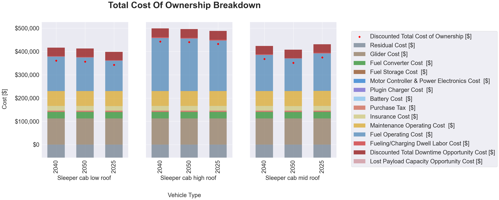
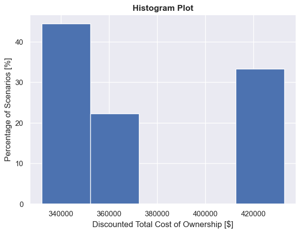
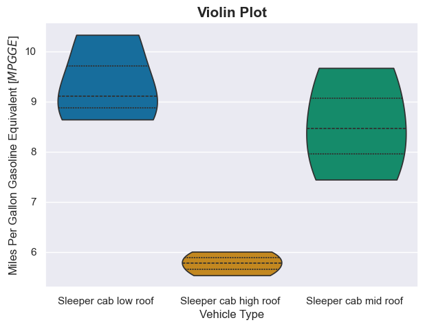

Visualization
The T3COCharts class (t3co.visualize.charts) turns a T3CO results CSV (or DataFrame) into three plots, each rendered with a selectable backend:
backend="matplotlib"— static figures for PNG/PDF export. This is the default when you use the class from Python.backend="plotly"— interactive, self-contained HTML.
From the command line, --plot offers the same choice and defaults to the interactive Plotly report; see Charts from the CLI.
Install
The plotting libraries are an optional extra:
pip install t3co[viz]
matplotlib is already a core T3CO dependency, so the TCO breakdown and histogram render without the extra. The violin plot additionally needs seaborn, and the interactive HTML backend needs plotly.
Usage
from t3co.visualize.charts import T3COCharts
tc = T3COCharts(filename="results.csv", backend="plotly")
fig = tc.generate_tco_plots(x_group_col="vehicle_fuel_type", subplot_group_col="vehicle_type")
fig.write_html("tco_breakdown.html") # or fig.savefig(...) with the matplotlib backend
# Combine several Plotly figures into one self-contained HTML report:
T3COCharts.write_html_report(
[
tc.generate_tco_plots(x_group_col="vehicle_fuel_type"),
tc.generate_histogram(hist_col="discounted_tco_dol", n_bins=10),
tc.generate_violin_plot(x_group_col="vehicle_fuel_type", y_group_col="mpgge"),
],
"charts.html",
)
T3COCharts reads the prefixed result columns directly and derives the grouping columns (vehicle_fuel_type, vehicle_type, vehicle_weight_class, veh_pt_type) automatically. Each generate_* method returns a figure object that you save or display yourself.
TCO Breakdown
Stacked cost components per scenario, with a marker for the discounted TCO. Pass x_group_col and/or y_group_col to split the results into a subplot grid (e.g. by fuel type and weight class).
Each bar sums to the discounted TCO. Cash purchases stack the MSRP breakdown; loan and lease purchases stack the down payment and the discounted loan/lease payments instead, since those are what the Ledger counts. The residual value is a credit and stacks below zero, so the TCO marker sits at the bar's height above zero minus its depth below zero.

Histogram
Distribution of any numeric output across selections. show_pct=True plots the percentage of scenarios instead of a count.

Violin
Distribution of a metric across categories (e.g. mpgge by fuel type).

Interactive explorer
interactive_explorer_html() returns an HTML fragment: a Plotly scatter with two <select> dropdowns to choose the x- and y-axis columns — pick any grouping column or numeric output for either axis and the chart updates client-side, no server needed. It leads the combined HTML report.
tc = T3COCharts(filename="results.csv", backend="plotly")
T3COCharts.write_html_report([tc.interactive_explorer_html()], "explorer.html")
Grouped breakdown with a "Group by" dropdown
grouped_tco_html() returns an HTML fragment whose "Group by" dropdown facets the TCO breakdown into subplots by any category (fuel type, vehicle type, weight class, …), sharing one cost-component legend; "None" shows one bar per scenario. Switching is client-side, so it works in a static file. Pass orient="y" to facet into rows instead of columns.
tc = T3COCharts(filename="results.csv", backend="plotly")
T3COCharts.write_html_report([tc.grouped_tco_html()], "breakdown.html")
Interactive histogram and violin
interactive_histogram_html() adds a column dropdown to the histogram, and interactive_violin_html() adds x- and y-axis dropdowns to the violin — both client-side.
The combined report
write_html_report(items, path, title="T3CO Results Explorer") stitches figures and HTML fragments into one self-contained page with a pinned title at the top. The --plot report combines the custom scatter, the grouped breakdown, and the interactive histogram and violin:
tc = T3COCharts(filename="results.csv", backend="plotly")
T3COCharts.write_html_report(
[
tc.interactive_explorer_html(),
tc.grouped_tco_html(),
tc.interactive_histogram_html(),
tc.interactive_violin_html(),
],
"charts.html",
)
Charts from the CLI
Add --plot to any sweep run to generate the charts next to the results CSV. It takes an optional backend:
| Option | Output |
|---|---|
--plot or --plot plotly |
One interactive, self-contained HTML report (…_charts.html) that combines the explorer and the three charts. This is the default. |
--plot matplotlib |
Static PNG images, one per chart (…_tco_breakdown.png, …_tco_histogram.png, …_tco_violin.png). --plot seaborn does the same. |
Both --plot matplotlib and --plot=matplotlib work. Install the extra first:
pip install t3co[viz]
Run an analysis by its config.analysis_id — from a cloned repo (uses the bundled T3COConfig.csv):
python -m t3co.cli.sweep --analysis-id=0 --plot
From a PyPI install, point --config at your copy of the demo inputs (see the Quick Start):
python -m t3co.cli.sweep --analysis-id=0 --config=path/to/demo_inputs/T3COConfig.csv --plot
Choose the backend, limit the selections, or set the output folder:
python -m t3co.cli.sweep --analysis-id=0 --plot matplotlib # static PNGs instead of one HTML
python -m t3co.cli.sweep --analysis-id=0 --selections "[1,2,3]" --plot
python -m t3co.cli.sweep --analysis-id=0 --dst-dir=/abs/path/out --plot
Where the output goes
Charts land next to the results CSV, in config.dst_dir (or --dst-dir):
results_<timestamp>_sel_<selections>.csv
results_<timestamp>_sel_<selections>_charts.html # --plot: explorer + 3 charts in one file
results_<timestamp>_sel_<selections>_tco_breakdown.png # --plot matplotlib: one PNG per chart
results_<timestamp>_sel_<selections>_tco_histogram.png
results_<timestamp>_sel_<selections>_tco_violin.png
Note
A relative dst_dir / --dst-dir resolves against the config file's folder, not your current
working directory. Pass an absolute path to control exactly where the output lands.
The visualization_demo.py script shows the full programmatic workflow in both backends.